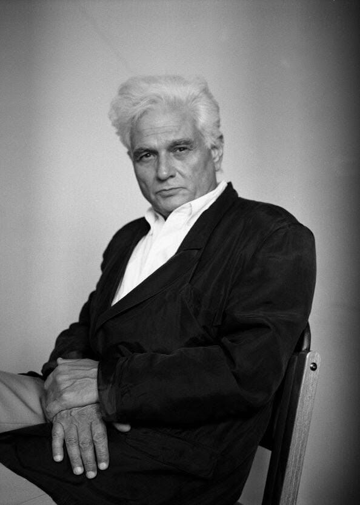

Who Was Jacques Derrida?
Jacques Derrida (1930–2004) was a French philosopher and one of the most influential and controversial thinkers of the twentieth century. He is best known for developing deconstruction, a distinctive way of reading texts and examining concepts that investigates the assumptions, hierarchies, tensions, and instabilities on which systems of thought depend.
Jacques Derrida's philosophy challenged the belief that language simply transmits fixed meanings from one mind to another. He argued that meaning is produced through differences between signs, through historical and linguistic contexts, and through processes of reference that make every meaning open to further interpretation.
Derrida is closely associated with poststructuralism, although his work cannot be reduced to a single philosophical label or movement. His writings emerged from sustained engagements with phenomenology, structuralism, linguistics, psychoanalysis, literature, and the philosophical traditions of thinkers such as Edmund Husserl, Martin Heidegger, Friedrich Nietzsche, and Jean-Jacques Rousseau.
His most famous ideas include deconstruction, différance, the trace, supplement, logocentrism, and the critique of the metaphysics of presence. Together, these concepts transformed debates about language, interpretation, identity, philosophy, and textual meaning by questioning the search for completely self-present and permanently stable foundations.
Jacques Derrida: Quick Facts
- Full name — Jacques Derrida
- Born — July 15, 1930
- Died — October 9, 2004
- Nationality — French
- Philosophical tradition — Continental philosophy, poststructuralism, and deconstruction
- Major fields — Philosophy, literary theory, language, ethics, politics, law, and cultural theory
- Famous philosophical approach — Deconstruction
- Major concepts — Différance, trace, supplement, iterability, logocentrism, and metaphysics of presence
- Most famous work — Of Grammatology
- Other major works — Writing and Difference, Speech and Phenomena, and Margins of Philosophy
- Major intellectual influences — Phenomenology, structural linguistics, Martin Heidegger, Friedrich Nietzsche, Sigmund Freud, and the broader history of Western philosophy
Jacques Derrida's Early Life and Education

Jacques Derrida was born in 1930 in El Biar, near Algiers, in Algeria, then under French colonial rule. He was born into a Sephardic Jewish family, and his childhood was shaped by the complex cultural and political conditions of colonial Algeria, including the discriminatory measures imposed under the Vichy regime during the Second World War.
Derrida later moved to France and pursued philosophy through the demanding French educational system, eventually studying at the École Normale Supérieure in Paris. His philosophical education brought him into close contact with phenomenology and the history of European philosophy, particularly the work of Edmund Husserl and Martin Heidegger.
He developed his philosophy during a period of extraordinary intellectual activity in twentieth-century France. Phenomenology, structuralism, psychoanalysis, Marxism, linguistics, anthropology, and existential philosophy were reshaping debates about language, consciousness, culture, society, and human identity.
These influences helped produce the distinctive character of Derrida's philosophy. Rather than constructing a closed philosophical system, Derrida often performed extraordinarily close readings of major texts, asking what assumptions made their arguments possible and how their own language might reveal tensions that could not be fully controlled by the author's explicit claims.
Why Is Jacques Derrida Important?
Jacques Derrida is important because he fundamentally transformed twentieth-century discussions about language, texts, and philosophical concepts. His work challenged the assumption that ideas possess fixed meanings that can be cleanly separated from history, context, interpretation, and the networks of concepts through which they become intelligible.
Derrida's practice of deconstruction encouraged readers to examine binary oppositions such as speech and writing, presence and absence, nature and culture, or reason and emotion. He argued that such oppositions often contain hierarchies in which one term is privileged while the other is treated as secondary, derivative, or merely supplementary.
His influence extended far beyond academic philosophy. Literary critics used deconstructive reading to reconsider texts and interpretation, while scholars in law, architecture, political theory, theology, gender studies, cultural studies, and the arts developed new ways of questioning established concepts and institutional assumptions.
Derrida remains controversial partly because his writing is often difficult and because deconstruction has frequently been simplified or misunderstood. Nevertheless, his influence on twentieth-century and contemporary thought is enormous, and his work remains central to debates within continental philosophy and many other fields.
The Historical Context of Jacques Derrida's Philosophy
Derrida developed his ideas during the second half of the twentieth century, when European intellectual life was re-examining traditional assumptions about reason, knowledge, language, identity, and human nature. The catastrophes of two world wars, colonialism, and the political crises of the modern world also raised difficult questions about the supposed progress of Western civilization.
One important intellectual movement during this period was structuralism. Structuralist thinkers examined language and culture as systems of relationships in which individual elements acquire significance through their position within a larger structure rather than through completely independent meanings.
Phenomenology was another major influence. Edmund Husserl investigated the structures of consciousness and experience, while Martin Heidegger subjected the history of Western metaphysics to a profound re-examination. Derrida drew deeply from both thinkers while also questioning assumptions about presence, origin, and philosophical foundations that he believed remained within inherited traditions.
This intellectual environment contributed to what later became known as poststructuralism. Derrida, Michel Foucault, Gilles Deleuze, and others questioned whether structures, identities, concepts, and systems possess the stable foundations and final boundaries that earlier theories sometimes assumed, although these thinkers developed very different philosophical projects.
Jacques Derrida's Main Philosophical Ideas
1. Deconstruction
Deconstruction is Derrida's most famous philosophical approach. It examines how texts and concepts depend upon distinctions, hierarchies, and assumptions that may become unstable when carefully analyzed. It does not simply mean destroying an idea, rejecting truth, or claiming that nothing has meaning.
2. Différance
Derrida used the term différance to indicate the processes of difference and deferral through which meaning is produced. A sign acquires significance partly by differing from other signs, while complete meaning is continually deferred through further references, contexts, and interpretations.
3. The Critique of Binary Oppositions
Derrida examined oppositions such as speech and writing, presence and absence, and nature and culture. He argued that Western thought often privileges one side of an opposition while treating the other as secondary, even though the supposedly inferior term may be necessary for defining the privileged one.
4. The Metaphysics of Presence
Derrida argued that much of Western philosophy has repeatedly given special value to immediacy, origin, self-presence, and direct meaning. His work investigates how apparently immediate presence is already complicated by difference, temporality, memory, language, and relations to what is absent.
5. Meaning Is Never Completely Final
Derrida did not argue that communication is impossible or that any interpretation is equally valid. Instead, he emphasized that signs can function in new contexts and therefore remain open to reinterpretation. No interpretation can permanently eliminate every possible future question about a text or concept.
What Is Deconstruction?
Deconstruction is the idea most strongly associated with Jacques Derrida, but it is often misunderstood as a method for destroying texts, rejecting truth, or proving that nothing has meaning. Derrida's philosophical practice is considerably more precise and complex than these popular descriptions suggest.
Deconstruction involves reading a text carefully to identify the distinctions, assumptions, and hierarchies that organize its argument. A philosophical system may depend upon one concept being treated as primary, original, or superior while another is described as secondary, derivative, or merely supplementary.
Derrida examines how these apparently stable relationships can become complicated from within. The supposedly secondary term may be necessary for defining the privileged term, revealing that the hierarchy depends upon what it attempts to subordinate or exclude.
Deconstruction therefore does not simply attack a philosophical text from outside. It works through close attention to the text's own language and conceptual operations, showing how tensions, ambiguities, or undecidable possibilities can emerge from the very distinctions through which the text tries to establish a stable meaning.
Deconstruction Explained Simply
Imagine a philosophical theory that divides the world into two opposite categories and assumes that one category is naturally more important. Deconstruction asks how this division was created, what allows the distinction to function, and whether the two sides are actually as independent as they initially appear.
For example, Western philosophy often treated speech as more immediate and authentic than writing, because the speaker appears to be present to their own words. Derrida asked whether speech can truly provide pure immediate meaning without relying upon repetition, difference, memory, signs, and other structures associated with writing.
The goal is not simply to reverse the hierarchy and declare writing superior to speech. A deconstructive analysis first exposes the hierarchy and then investigates the more complicated relation that makes the simple opposition unstable.
In this sense, deconstruction encourages exceptionally careful reading. It asks readers to look beyond apparently obvious meanings and examine how language produces distinctions that may contain tensions, exclusions, ambiguities, and possibilities that the text cannot completely close or control.
What Is Différance in Derrida's Philosophy?
Différance is one of Jacques Derrida's most famous and difficult terms. The French spelling deliberately combines ideas associated with both differing and deferring, expressing the claim that meaning is generated through relations and temporal processes rather than existing as a completely isolated and self-present object.
A word has meaning partly because it differs from other words. A concept becomes intelligible through distinctions from related concepts, so meaning depends upon a network of differences rather than a simple relationship between one word and one permanently fixed essence.
Meaning is also deferred because understanding one sign frequently leads to further signs, definitions, contexts, and concepts. The search for a final and completely self-contained meaning therefore opens further relations instead of arriving at a perfectly present terminus outside language.
Derrida's use of the spelling différance also demonstrates an important point about writing. In spoken French, the difference between différence and différance cannot be heard, but it becomes visible in writing, complicating the traditional assumption that speech always possesses a more immediate philosophical relation to meaning than writing.
Jacques Derrida and Binary Oppositions
A central part of Derrida's philosophy involves the examination of binary oppositions. Western thought frequently organizes concepts into pairs such as speech and writing, mind and body, nature and culture, reason and emotion, or presence and absence.
Derrida argued that these pairs are rarely entirely neutral. One term often receives greater philosophical value and is treated as original, natural, immediate, or fundamental, while the other is considered secondary, derivative, artificial, or dependent.
Deconstruction investigates whether the privileged term can actually maintain its identity without the term it excludes. The supposedly secondary concept may be necessary for defining the primary one, revealing that the hierarchy is not as self-sufficient or stable as it first appears.
Derrida's analysis does not mean that every distinction is meaningless or that all differences should disappear. Instead, it asks readers to become aware of how distinctions operate and how philosophical systems may depend upon exclusions whose boundaries become more complicated when subjected to close analysis.
What Is Logocentrism?
Logocentrism is Derrida's term for a broad tendency within Western philosophical traditions to seek a stable center, origin, foundation, or ultimate principle capable of guaranteeing meaning and truth. Such a center may be associated with reason, consciousness, God, nature, being, or another supposedly fundamental source.
Derrida questioned whether philosophical systems can ever completely escape the play of language and difference in order to reach a perfectly self-present foundation. Concepts used to establish certainty must themselves be articulated through signs and conceptual relations that cannot simply stand outside interpretation.
His critique of logocentrism does not simply claim that truth does not exist. Instead, Derrida examines the philosophical desire for an absolutely secure point that would permanently fix meaning and bring the movement of interpretation to a final conclusion.
This critique became highly influential in poststructuralism and literary theory. It encouraged scholars to question whether concepts that appear completely natural, universal, or self-evident may depend upon historical, linguistic, and philosophical structures that are more contingent and complex than they initially seem.
Jacques Derrida on Speech and Writing
Derrida criticized what he called phonocentrism, the tendency to give speech philosophical priority over writing. Traditionally, speech was often considered closer to a speaker's thoughts and intentions because the speaker appears to be present when the words are produced, while writing was treated as a secondary representation.
Derrida questioned this hierarchy by examining how speech itself depends upon signs, repetition, difference, and the possibility of being understood beyond a single immediately present situation. Even spoken language must be repeatable if it is to function as language.
Writing demonstrates particularly clearly that meaning can continue beyond the immediate presence of an author or reader. A written text can be encountered in different times and places and can enter new contexts that its original writer cannot completely anticipate or control.
Derrida therefore used the concept of writing in a broader philosophical sense than ordinary written marks on a page. He was interested in structures of difference, spacing, repetition, and repeatability that make communication possible while also preventing meaning from becoming permanently closed.
The Metaphysics of Presence
The metaphysics of presence is Derrida's description of a recurring tendency within Western philosophy to privilege what appears immediately present, original, self-identical, and fully available to consciousness. Philosophers have repeatedly searched for an ultimate origin or foundation existing prior to mediation, interpretation, and representation.
Derrida questioned whether complete presence is ever as pure as philosophy sometimes assumes. Human experience is shaped by memory, expectation, temporality, language, repetition, and difference, meaning that what is experienced as present is already related to what has passed away or has not yet arrived.
A concept may appear to possess a stable and independent origin, but historical and philosophical analysis can reveal earlier concepts, conditions, and relationships that helped produce it. What appears entirely self-sufficient may therefore depend upon a complex network of relations that it cannot fully contain.
Derrida's critique does not simply eliminate the idea of presence or claim that nothing is ever present. It asks whether presence can be understood philosophically without considering absence, difference, temporality, and the processes through which something comes to have meaning.
What Is the Trace in Derrida's Philosophy?
The concept of the trace helps explain Derrida's understanding of difference and meaning. A sign or concept gains significance through its relations to other signs and concepts, including relations to what is no longer immediately present or has not yet become present.
Every concept therefore carries traces of other concepts. The meaning of a word is shaped by distinctions from what it is not, as well as by historical and linguistic relations that remain connected to it even when those other elements are not directly visible within the present act of interpretation.
The trace complicates the idea that meaning can be completely present in one isolated moment. What is absent can still influence how something is understood because every sign functions within a larger network of differences, references, repetitions, and temporal relations.
Derrida's idea of the trace is closely related to différance. Together, these terms describe how presence is never simply isolated from absence and how identity is produced through relations of difference. The trace is therefore not a hidden object waiting to be discovered but a way of thinking the relational structure through which meaning becomes possible.
The Supplement in Derrida's Philosophy
Derrida's concept of the supplement examines something that appears to be merely an additional element but may reveal that the supposedly complete original was never entirely self-sufficient. The supplement therefore complicates simple ideas about origin, completeness, and dependence.
A supplement can appear secondary because it is added to something that supposedly already exists as complete in itself. However, if the original requires the supplement in order to function, then the distinction between what is primary and what is secondary becomes significantly more complicated.
Derrida developed this analysis prominently through his reading of Jean-Jacques Rousseau, particularly in discussions concerning writing and the supposed purity of speech or nature. The supplement reveals tensions within attempts to establish a completely pure origin untouched by mediation or addition.
This idea demonstrates a broader feature of deconstruction. Concepts that appear marginal, derivative, or secondary can reveal conditions required by the supposedly central or original concept. What is added from the outside may turn out to expose an incompleteness that was already present within.
Jacques Derrida's Philosophy of Language
Language is central to Jacques Derrida's philosophy because human beings encounter philosophical concepts through words, signs, texts, and systems of communication. Derrida questioned the assumption that language simply provides transparent access to meanings that exist independently and remain completely unchanged by interpretation.
Words gain significance through their relationships with other words and signs. A concept can therefore function differently when it enters a new context, encounters different readers, or becomes connected with new historical circumstances and interpretive traditions.
This does not mean that language is useless or that people cannot communicate successfully. Derrida's point is that communication necessarily contains the possibility of reinterpretation because signs must be repeatable and capable of functioning in contexts that cannot always be completely determined in advance.
Derrida's philosophy of language became influential because it challenged overly simple theories of meaning. It encouraged philosophers and scholars to study not only what a text explicitly says but also how language produces distinctions, exclusions, ambiguities, repetitions, and possibilities of interpretation that exceed a single final meaning.
Jacques Derrida and Structuralism
Structuralism was an important intellectual movement during Derrida's early career. Structuralist thinkers argued that language, culture, myths, and other human systems could be understood by studying the structures and relationships that organize them rather than treating each element as an entirely independent object.
Derrida shared structuralism's interest in relations and systems, but he questioned whether any structure possesses a completely stable center that remains untouched by the relations and differences operating throughout the system. His work repeatedly investigated what happens when a supposed center is itself understood as part of a structure.
His influential discussions of structure, play, and the problem of the center helped challenge some structuralist assumptions about stability and closure. Derrida suggested that systems of meaning contain movement and difference that prevent their elements from being permanently fixed in a final arrangement.
For this reason, Derrida became closely associated with poststructuralism. Poststructuralist thought did not simply reject the existence of structures; rather, it questioned whether structures could provide completely final, self-contained, and permanently stable explanations of meaning, culture, identity, and human experience.
Jacques Derrida and Poststructuralism
Jacques Derrida is widely regarded as one of the most important philosophers associated with poststructuralism, a broad intellectual development that challenged the idea that language, culture, and knowledge can be completely explained through stable, self-contained, and universal structures. His work emerged partly through a critical engagement with structuralism rather than through a simple rejection of it.
Poststructuralist thinkers often emphasized difference, historical change, interpretation, and the instability of categories that had previously appeared secure. Derrida contributed to these debates by examining how philosophical systems depend upon distinctions and hierarchies whose apparent stability can be unsettled by their own internal conditions and implications.
Derrida himself did not always accept every label applied to his work, and poststructuralism should not be understood as a single unified doctrine with one common method. His philosophy developed a distinctive vocabulary—including différance, trace, supplement, and deconstruction—that cannot simply be reduced to a general intellectual movement.
Nevertheless, Derrida became central to poststructuralist thought because his work challenged the search for absolutely stable foundations and encouraged new ways of thinking about language, identity, history, literature, institutions, and philosophical meaning. His influence helped shift attention toward the conditions, differences, and exclusions through which systems of meaning are produced and maintained.
Jacques Derrida and Literature
Derrida had an enormous influence on literary theory. Deconstruction encouraged critics to read literary texts with close attention to ambiguities, metaphors, repetitions, contradictions, and tensions that may complicate an apparently straightforward interpretation. Such reading does not treat these features as accidental imperfections but as potentially important elements in the production of meaning.
A deconstructive reading does not attempt simply to discover one hidden meaning beneath the surface of a literary work. Instead, it examines how multiple meanings and tensions can emerge through the language of the text itself, including moments where a work appears to undermine, complicate, or exceed the distinctions on which its interpretation initially depends.
Derrida also challenged a strict boundary between philosophy and literature. Philosophical texts employ metaphors, rhetorical strategies, examples, and forms of writing that can influence their arguments, while literature can raise profound philosophical questions about truth, identity, language, memory, responsibility, and reality.
His influence transformed literary criticism during the twentieth century, particularly in debates about interpretation and textual meaning. Although deconstruction later received substantial criticism and became less dominant in some academic fields, Derrida's impact on close reading and on the philosophical study of interpretation remains historically significant.
Jacques Derrida's Way of Reading Philosophy
Derrida was an exceptionally careful and inventive reader of philosophical texts. Rather than merely summarizing what a philosopher intended to say or treating a text as the transparent expression of a finished doctrine, he often examined its language, metaphors, distinctions, repetitions, and conceptual tensions.
His work engaged deeply with philosophers including Plato, Aristotle, Rousseau, Kant, Hegel, Nietzsche, Husserl, Heidegger, and many others. Derrida's readings frequently followed apparently secondary details or marginal concepts in order to reveal unexpected relationships between ideas that conventional interpretations had treated as clearly separate.
This method sometimes led critics to accuse Derrida of misreading or excessively transforming earlier philosophers. Supporters, however, argued that his interpretations revealed dimensions and tensions within philosophical texts that more conventional readings overlooked. The disagreement raises an important question about whether interpretation can ever simply reproduce an author's meaning without adding a new historical perspective.
Derrida's approach demonstrates that the history of philosophy is not simply a collection of finished systems whose meanings were permanently settled when they were written. Earlier texts continue to generate new questions because they are read within changing intellectual, linguistic, and historical contexts, while still placing limits on what can responsibly be said about them.
Jacques Derrida and Ethics
Although Derrida became famous primarily for deconstruction and his analysis of language, his later philosophy gave increasing attention to ethical questions. He explored responsibility, justice, hospitality, forgiveness, friendship, the gift, and the difficult relationship between individuals and what he often called the other.
Derrida was particularly interested in situations where ethical decisions cannot be reduced to the mechanical application of a general rule. A genuinely responsible decision must respond to the singularity of a concrete situation, yet it must also take account of existing laws, norms, and obligations. This tension means that ethical judgment can never be entirely automatic.
His philosophy therefore connects responsibility with uncertainty and what he described as the experience of the undecidable. This does not mean that a person should remain permanently incapable of acting; rather, an important decision may require action precisely where no rule can provide a completely certain answer in advance.
Derrida's ethical thought challenges the desire for complete moral certainty. Responsibility may begin where simple formulas become insufficient and where individuals must confront the singular complexity of another person's situation. For this reason, his later work connects deconstruction not with indifference but with an ongoing demand to question whether established concepts and institutions have adequately responded to others.
Jacques Derrida on Justice and Law
Derrida developed an important distinction between law and justice. Laws are specific systems of rules that can be formulated, interpreted, applied, and changed within social and political institutions, whereas justice cannot, in Derrida's account, be completely exhausted by any existing legal code.
Laws can therefore be criticized, interpreted, and transformed. A law may be legally valid while still failing to respond adequately to a particular situation or to those excluded by an existing political order. Derrida's distinction keeps open the possibility that appeals to justice may require the revision of laws and institutions rather than simple obedience to them.
This does not mean that laws are unnecessary or that justice can exist without institutions. Derrida instead emphasizes a tension between the need for general and calculable rules and the singular complexity of particular cases. A decision concerned with justice must negotiate between these demands without being able to eliminate the tension completely.
Derrida famously described justice as something that is always to come, meaning not that justice should be endlessly postponed, but that no present legal system can claim to have finally completed it. This idea influenced legal theory and political thought by encouraging continual criticism of institutions in the name of a justice that remains beyond complete possession.
Jacques Derrida on Hospitality
Hospitality became an important theme in Derrida's later philosophy. He explored the tension between an unconditional openness toward another person and the practical conditions required by real homes, communities, laws, borders, and political institutions. Hospitality therefore became a way of examining the difficult relation between ethical ideals and institutional reality.
Unconditional hospitality would involve welcoming the stranger without first reducing the other completely to familiar categories or imposing absolute control. Yet practical hospitality usually involves rules concerning borders, security, identity, resources, legal status, and responsibility. The unconditional ideal and conditional practices can therefore never simply coincide.
Derrida did not believe this tension could be permanently solved through one simple formula. Instead, he examined how practical rules may be necessary while remaining open to criticism in the name of a more demanding ethical responsibility. The ideal does not provide a ready-made policy but continually challenges existing conditions of welcome and exclusion.
His reflections on hospitality became especially relevant to debates concerning immigration, refugees, borders, nationalism, and global responsibility. They demonstrate how Derrida's later philosophy moved far beyond textual interpretation alone and addressed concrete political and ethical problems involving the treatment of strangers and otherness.
Jacques Derrida and Politics
Derrida's later work increasingly engaged with political questions, including democracy, human rights, nationalism, Marxism, colonialism, sovereignty, and international responsibility. His political thought often focused on institutions and ideals that must be defended while simultaneously remaining open to criticism and transformation.
One of his most important political ideas was democracy to come. Derrida did not mean that democracy should simply be postponed into an indefinitely distant future. Rather, the phrase expresses the idea that no existing democracy can regard itself as fully complete, perfectly inclusive, or finally immune from criticism.
A political system that believes it has already achieved perfect democracy may stop questioning its exclusions, inequalities, and failures. Derrida's idea therefore treats democracy as an ongoing commitment to openness, equality, participation, and future transformation rather than as a finished historical achievement.
His political philosophy consequently combines criticism with commitment. Derrida did not argue that institutions should simply be abandoned or destroyed; institutions are necessary for political life, but they must remain open to revision in response to demands for justice, freedom, equality, and changing historical circumstances.
Jacques Derrida and Religion
Derrida also explored questions concerning religion, faith, messianism, promise, and the future. His approach did not fit neatly within traditional religious philosophy because he often examined religious concepts through themes of uncertainty, expectation, absence, and openness to what cannot be fully predicted or controlled.
An important theme in his later work was a form of messianicity associated with expectation and the possibility of what is still to come. Derrida distinguished this broad structure of expectation from commitment to one particular historical messiah, allowing him to connect religious language with questions of justice, democracy, and political responsibility.
Derrida's engagement with religion was complex. Born into a Sephardic Jewish family in colonial Algeria, he later reflected on Judaism, Christianity, and other religious traditions without fitting comfortably into simple categories of either conventional belief or straightforward unbelief. His philosophical interest often focused on what religious concepts reveal about promise, faith, otherness, and the future.
His philosophy of religion remains important because it examines how faith and expectation can involve openness to what cannot be fully known in advance. Rather than treating uncertainty as the opposite of all commitment, Derrida explored how promises, hopes, and responsibilities may depend precisely upon a future that cannot be completely calculated beforehand.
Major Works of Jacques Derrida
- Of Grammatology — Derrida's major work on writing, language, logocentrism, Rousseau, and the philosophical assumptions behind the traditional priority given to speech, presence, and supposedly original meanings.
- Writing and Difference — A collection of major essays examining structuralism, phenomenology, philosophy, literature, language, and questions that became central to the development of deconstruction.
- Speech and Phenomena — A philosophical study of Edmund Husserl and the relationship between consciousness, speech, signs, repetition, and the problem of presence.
- Margins of Philosophy — A collection containing important discussions of différance, language, philosophical concepts, and the instability of traditional conceptual distinctions and hierarchies.
- Dissemination — A major work exploring writing, interpretation, philosophy, literature, and forms of meaning that resist complete closure or a single final interpretation.
- Specters of Marx — A work examining Marxism, politics, history, inheritance, justice, and the continuing influence of ideas that are declared finished or belonging only to the past.
- Force of Law — An influential discussion of law, justice, interpretation, decision, and the tension between established legal rules and the demand for justice in singular situations.
Jacques Derrida's Influence and Legacy
Jacques Derrida had an enormous influence on philosophy and the humanities. His ideas became important in literary theory, poststructuralism, cultural studies, feminist theory, legal studies, architecture, theology, political philosophy, and the philosophical study of language and interpretation. :contentReference[oaicite:1]{index=1}
Deconstruction changed how many scholars approached texts and institutions. Instead of assuming that a text necessarily contains one completely stable meaning that can be recovered without difficulty, readers began paying greater attention to ambiguity, contradiction, marginalization, conceptual hierarchy, and the historical conditions shaping interpretation.
Derrida also influenced discussions of identity and difference. His critique of fixed conceptual oppositions encouraged scholars to question categories that had previously been treated as natural, universal, or permanently stable, while also examining the historical and institutional processes through which such categories acquire authority.
His legacy remains controversial but historically undeniable. Even thinkers who strongly disagree with Derrida often engage with questions that his work helped make central: How does language shape thought? Can meaning ever be completely fixed? What assumptions are hidden within philosophical concepts? And how should criticism respond when existing systems appear necessary yet also imperfect and open to transformation?
Criticisms of Jacques Derrida's Philosophy
Jacques Derrida's philosophy has received significant criticism. One of the most common concerns involves the difficulty of his writing. Derrida's complex style, dense argumentation, neologisms, and careful wordplay can make his work challenging even for readers with substantial philosophical experience. His style has contributed both to his enormous influence and to the hostility of some critics. :contentReference[oaicite:2]{index=2}
Some critics argue that deconstruction leads toward relativism or skepticism about truth and meaning. Derrida's defenders respond that deconstruction does not simply claim that all interpretations are equally valid. Instead, it investigates the conditions, assumptions, and limits of interpretation while requiring close attention to the language and structure of particular texts.
Analytic philosophers have sometimes criticized Derrida for what they regard as insufficient clarity, argumentative precision, or excessive reliance on literary language. Supporters argue that his style is connected to the philosophical problems he investigates and that apparently neutral standards of clarity may themselves require examination rather than being accepted without question.
Other critics believe Derrida's critique of stable foundations makes political and ethical commitment difficult. Yet his later work on justice, democracy, hospitality, responsibility, and political institutions demonstrates that deconstruction did not lead him away from practical questions. Instead, he attempted to show how commitment remains necessary even when no rule or institution can provide a final guarantee of complete justice. :contentReference[oaicite:3]{index=3}
Jacques Derrida's Most Important Concepts
Deconstruction
A philosophical approach that examines the assumptions, hierarchies, distinctions, and internal tensions that organize texts and concepts.
Différance
The idea that meaning depends upon both differences between signs and the continual deferral of complete and final meaning.
Logocentrism
The tendency to search for a stable center, origin, or ultimate foundation that guarantees meaning, truth, and philosophical certainty.
The Trace
The idea that every concept contains relationships to other concepts, including meanings and differences that are not immediately present.
The Supplement
Something apparently secondary or additional that reveals the incompleteness or dependence of what was believed to be primary.
Metaphysics of Presence
Derrida's critique of the philosophical tendency to privilege immediate presence, origin, certainty, and self-contained meaning.
Binary Oppositions
Conceptual pairs such as speech and writing or presence and absence that often contain hidden hierarchies and unstable relationships.
Jacques Derrida's Philosophy Explained Simply
- Who was Jacques Derrida? Jacques Derrida was a twentieth-century French philosopher famous for developing deconstruction and influencing poststructuralism, literary theory, philosophy, and cultural studies.
- What is deconstruction? Deconstruction is a way of closely examining texts and concepts to reveal hidden assumptions, conceptual hierarchies, tensions, and unstable distinctions.
- What is différance? Différance describes how meaning is created through differences between signs while also being continually deferred through further contexts and interpretations.
- Did Derrida believe that nothing has meaning? No. Derrida did not argue that meaning is impossible. He argued that meaning is more complex and open to context and reinterpretation than theories of completely fixed meaning suggest.
- What did Derrida criticize? He criticized logocentrism, fixed conceptual hierarchies, the priority traditionally given to speech over writing, and the search for completely stable philosophical foundations.
- Why is Derrida important today? His ideas remain important for understanding language, interpretation, identity, politics, justice, institutions, and the assumptions hidden within established ways of thinking.
Why Does Jacques Derrida Still Matter Today?
Jacques Derrida remains relevant because modern societies constantly debate language, identity, truth, interpretation, history, and the authority of institutions. Derrida's philosophy encourages people to examine concepts that may appear obvious but contain complicated histories and hidden assumptions.
His ideas are particularly relevant in an age of rapid communication. Digital texts can travel far beyond their original context, be quoted selectively, translated, transformed, and interpreted by audiences that the original author never imagined.
Derrida's political and ethical ideas also remain important. Questions concerning immigration, justice, democracy, hospitality, exclusion, human rights, and responsibility continue to involve tensions between universal principles and particular situations.
Most importantly, Jacques Derrida's philosophy teaches intellectual caution. It encourages readers to question simple oppositions and final answers while remaining attentive to the complexity of language, history, interpretation, and human responsibility.
Frequently Asked Questions About Jacques Derrida
Who was Jacques Derrida?
Jacques Derrida was a French philosopher who lived from 1930 to 2004. He is best known for developing deconstruction and for his influential work on language, writing, philosophy, ethics, politics, and poststructuralism.
What is Jacques Derrida famous for?
Jacques Derrida is most famous for deconstruction, différance, his critique of logocentrism, the metaphysics of presence, and his influential works including Of Grammatology and Writing and Difference.
What is deconstruction according to Derrida?
Deconstruction is an approach that carefully examines texts and concepts to reveal hidden assumptions, hierarchies, contradictions, and unstable distinctions within systems of thought.
What is différance?
Différance is Derrida's concept describing how meaning depends upon differences between signs while also being continually deferred through further contexts, concepts, and interpretations.
Was Jacques Derrida a poststructuralist?
Derrida is widely associated with poststructuralism because his work challenged the idea of completely stable structures and fixed meanings. However, his philosophy has its own distinctive concepts and methods.
Did Derrida believe that truth does not exist?
No. Derrida's philosophy is often misunderstood in this way. He questioned simple ideas of completely fixed and self-present meaning, but he did not simply claim that truth or communication is impossible.
What is logocentrism?
Logocentrism is Derrida's term for the tendency to search for a stable center, origin, or foundation that guarantees meaning and truth outside the complexities of language and interpretation.
What is the metaphysics of presence?
The metaphysics of presence refers to the philosophical tendency to privilege immediate presence, origin, certainty, and supposedly self-contained meaning over absence, difference, and mediation.
What are Jacques Derrida's major works?
His major works include Of Grammatology, Writing and Difference, Speech and Phenomena, Margins of Philosophy, Dissemination, and Specters of Marx.
Why is Jacques Derrida important?
Derrida is important because his philosophy transformed the study of language, texts, interpretation, literature, ethics, politics, and conceptual systems. His influence extends across philosophy and many areas of the humanities.
Related Contemporary Philosophers
Explore other major philosophers connected with poststructuralism, existential thought, phenomenology, language, power, identity, ethics, and twentieth-century continental philosophy.
Related Areas of Philosophy
Jacques Derrida's philosophy connects epistemology, metaphysics, philosophy of language, ethics, political philosophy, literary theory, continental philosophy, poststructuralism, and the study of meaning and interpretation.
Why Jacques Derrida Still Matters
Jacques Derrida remains one of the most important and debated philosophers of the twentieth century. His philosophy challenged readers to question concepts that appear stable and to investigate the language, distinctions, and historical assumptions that make those concepts possible.
Deconstruction remains his most famous contribution, but Derrida's philosophy extends far beyond the analysis of texts. His work on justice, ethics, hospitality, democracy, responsibility, and the future demonstrates the practical and political importance of his philosophical concerns.
Derrida did not offer simple final answers. Instead, he encouraged sustained questioning and careful interpretation. His philosophy reminds us that concepts can contain complexities that become visible only when we examine what they exclude, what they depend upon, and how their meanings change across contexts.
Whether readers agree with Derrida or strongly criticize him, his work continues to raise fundamental philosophical questions: Can meaning ever be completely fixed? Are our most important concepts as stable as they appear? And what responsibilities emerge when we recognize the complexity of language and interpretation?
Explore Great Philosophers